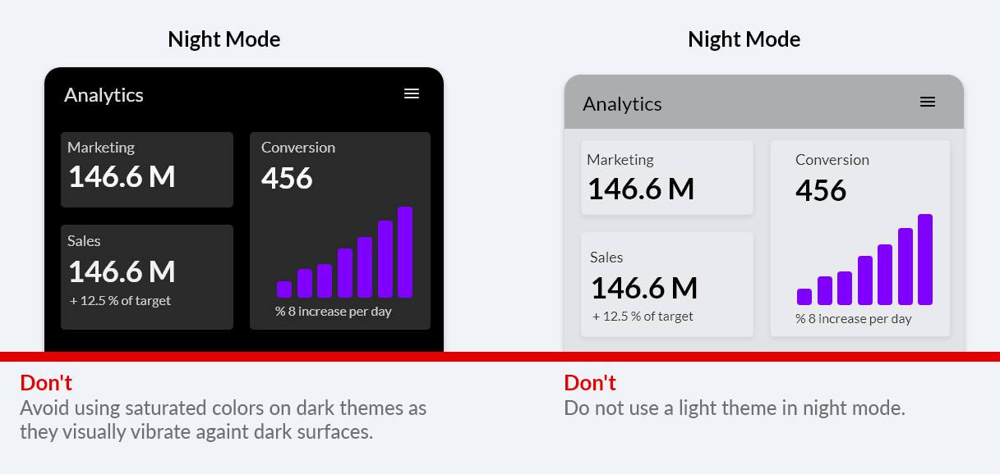
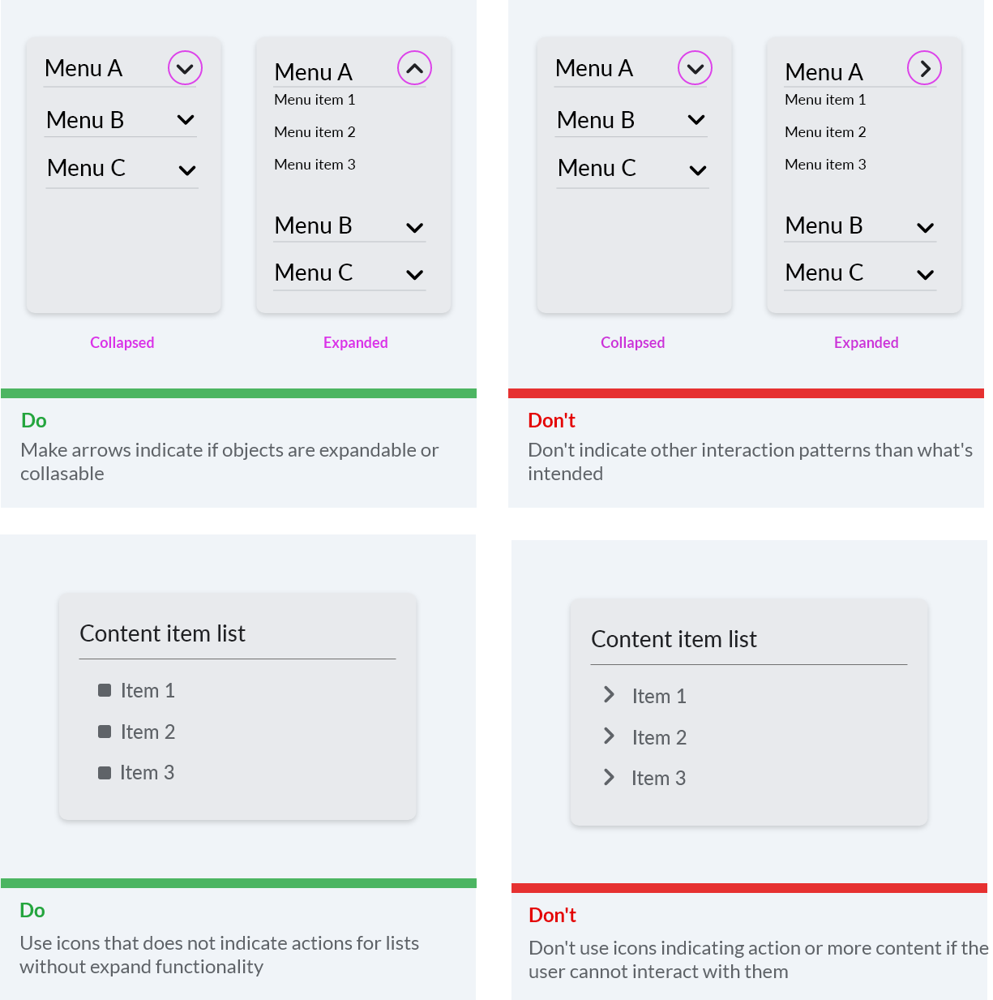
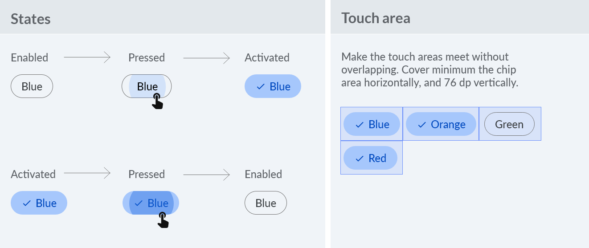
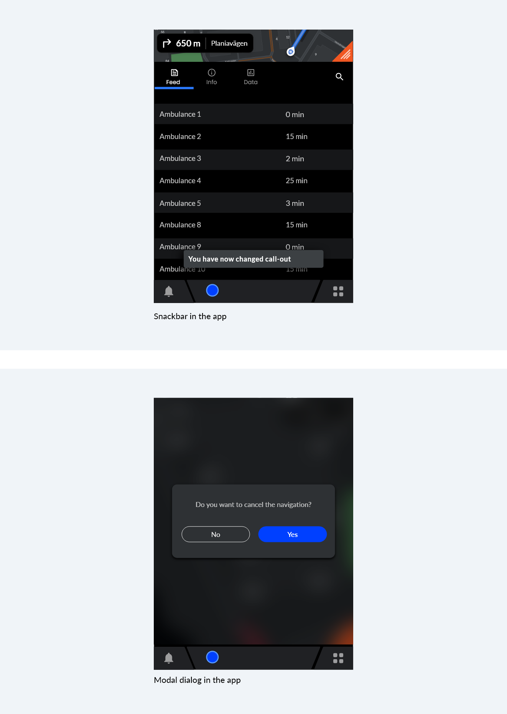

Design guidelines¶
Introduction¶
A Certified app will be part of the collection of carefully selected apps for Evam Vehicle Services. Vehicle Services supports users to stay in control and powers them into the digital world. An app inside Vehicle Services needs to be tailored for the users, the first responders.

Get to know our users¶
First responders include police officers, paramedics, and firefighters. They are the first ones at the site of an emergency. Our users are great at handling stressful and pressured situations, as well as making quick decisions to save lives. What they are not as used to in their everyday work life is being powered by the digital world. Rather, digital products aimed at helping them has sometimes added complexity to their tasks. Some of the main challenges the users are experiencing:
Handling a lot of information. Without information being filtered users are experiencing cognitive overload when trying to find what is important and remembering routines.
The users do need lots of information, but they only need what it is relevant when it is. Information about things that are not relevant should not be displayed. Try to reduce the cognitive load in all aspects, for example, users should never have to remember important information from one page when moving to another page.
Knowing what to do and prioritize. Decisions needs to be made, both small and big, even if the situation is stressful. Digital products can make this challenging by not clearly showing what is the most important to do.
To support users knowing what to do and when to do it, we can help by foreseeing what questions they might have in different situations. The design should clearly point out primary actions and by knowing how often and when functions are used we can help them prioritizing.
Having to handle bad design in digital products. Digital tools are not adapted for the different situations users are exposed to. The design is also not easily recognizable for users used to modern technology in their private lives.
Our users know their needs, but they are not suited to decide the design. Dare to challenge the users and translate their needs to a good design. The interfaces users meet in Evam Vehicle Services should feel familiar, be recognizable and intuitive. This is done by carefully creating a clear navigation structure for the app, and by using components and patterns the users use in their everyday private life when exposed to digital products.
Making an app tailored for first responders means designing it intentionally with these challenges in mind.
The main principles¶
Know what user needs you are to meet. Do research. Find out the needs and rank them. When are the needs relevant? Often the user will communicate their need with a design. Make sure you clearly know the need and dare to challenge their design proposal.
Challenge old ways. Try new ways and test them with users. Look at how other successful products do it in other industries and be inspired. Don’t let the previous undigitalized ways of working influence your product when not needed.
Test your app with the users. Go out and meet the people using the product out in the field. Dare to make mistakes and redo the design.
Prioritize and minimize content. Try minimizing the amount of content and features as much as possible to ensure the best value for the user.
Keep the UI design consistent. Try to always keep interaction patters the same, and make sure components behave alike throughout the app.
Make UI targets easy to touch. Remember to keep the app accessible to the users and simple to use in broad daylight, complete darkness and in a bumpy car ride.
The main components of Evam Vehicle Services¶
The app you are about to create will be displayed in the app area of Evam Vehicle Services and its app icon will be placed in the app bar available at the bottom of the screen. In Evam Vehicle Services, the screen is split between the navigation app (always in the top) and any other app in the bottom area.

Modes in Evam Vehicle Services¶
Attention
This will be available for Certified apps in the future
There is driving mode and non-driving mode to enhance focus on the road for the driver. When driving mode is active on a tablet, some apps will be locked to that user. Also notifications will be restricted.
There is day mode as well as night mode to enhance usability in different light conditions. Except for change of brightness in different light conditions, we also have night mode and day mode to change the colors of the UI to make the contrast more suitable. Read more about this under Color.
Templates¶
We are providing templates for the app bar. It includes two different app menus as well as states for page titles and back button. The templates can be styled, branded and customized to fit your app. We are recommending you to use the tab menu for the primary navigation.
Both menu types in the app bar also have states for displaying page title and back button:
You can add in icon buttons to have functionality such as “Search” or “Adding to favourites”. In the example below we have put in a search icon inside a tab bar menu to indicate the search functionality:
Layout¶
Layout is all about creating consistency, alignment and familiarity in Evam Vehicle Services.
Layout requirements
For app area width less than 1280 dp, use a minimum margin of 16 dp
For app area width greater that 1280 dp, use a minimum margin of 24 dp
Minimum touch area is 76 x 76 dp
Touch areas cannot overlap with other touch areas
Elements smaller than 76 dp are to be centered within the minimum touch area
Responsiveness and app area¶
Users want use Evam Vehicle Services on different devices and in any context. To ensure the consistency of the app across different screen sizes and screen orientations it needs to be responsive to the sizing of the app area:
Responsive margins¶
Margins make it easier to interact with the app and enhances the readability. For wider app areas the margins also become bigger.

Touch areas¶
Onscreen touch targets that are easily glanceable and reachable reduce driver distraction. Touch areas for the targets inside car environments must therefore be larger than on phones and tablets used outside of the vehicle.
Touch area requirements
Minimum touch area is 76 x 76 dp
Touch areas cannot overlap with other touch areas
Elements smaller than 76 dp are to be centered within the minimum touch area
Color¶
Colors used in a good way together makes the design harmonious, ensure accessible text, and distinguish UI elements and surfaces from one another. Color can also affect moods, invoke emotions, convey messages or signal actions.
We recommend you to:
Build your color choices from black to easily support both day and night usage with good readability
Use color minimally, with purpose
Show elevation via grayscale
Use transparency and opacity to guide visual focus
Color requirements
Minimum visual contrast of 4,5:1 between the foreground (text or icons) and background (colors, images etc.) is required for legibility. This is to meet the WCAG 2.0 Level AA Normal Text contrast requirements.
Night mode must have dark background.
Attention
Night mode will be available for the Certified apps in the future
Choosing colors¶
Choosing and applying color to the design can be a challenge. Here you will find some guidance.
Text legibility¶
To make text accessible to everyone and i every context, contrast requirement between text color and background is very important.
Black text is recommended for use on light backgrounds, and white text on dark backgrounds. Colored backgrounds or typography additionally change the rules regarding text opacity and different states of text. It is important to make sure the text is readable also for those with reduced color vision.
Instead of using grey text and icons on top of colored backgrounds, create better contrast by displaying white or black text with reduced opacity. For example, black text displayed at 75% opacity on a green background gives the text an appearance of black, with a hint of green.
Opacity is also great for creating emphasis on the important parts of the interface and should be used both for elements and text.
Day and night mode¶
Having a dark theme and a dark background is great for apps used inside vehicles both in day mode and night mode. It’s important that screens do not appear to bright when we are driving to not distract us. On top of that, it is important that the apps have a mode to work well when it is dark outside. The contrasts should not be as big, and everything can in general be darker.
For day mode you can have either a lighter or darker theme. Either way you will have to make some adjustments for the night mode.
How to create a night mode from your design:


Elevation¶
Surfaces and components appear on top of each other to create a hierarchy and to clearly group relevant components together.

Text and typography¶
Use familiar, understandable words and phrases. Technology can be intimidating. Avoid acronyms and technical jargon that people might not understand. Use what you know about your audience to determine whether certain words or phrases are appropriate.
Keep interface text clear and concise. People absorb short, direct text quickly and easily. They don’t appreciate being forced to read long passages to accomplish a task. Identify the most important information, express it concise, and present it clearly so people don’t have to read too much to find what they’re looking for or figure out what to do next.
Typography requirements
Minimum font size for body text is 20 sp if app is to be used by non-drivers only (locked to drivers)
Minimum font size for body text is 24 sp if app is also to be used by drivers
App bar titles are 32 sp
Sizing¶
Use a predecided typographic scale to ensure a consistent look and glanceable text at a range of levels for display text, body text, and subtext. This will also help the user understand what’s important. Convey a visual hierarchy among text elements. Focus attention in the most important spots. Both sizing and font weights are good tools for this.
We recommend having a typographic scale similar to this for the different levels of text:
Layout and alignment¶
The ideal line length is 40-60 characters per line for body text. To ensure good readability it should be easy for the user to jump between rows when reading.
Left-aligned text is the most common setting for left-to-right languages such as English. It is also important for readability to not justify the text.
Language support¶
Make sure the text written in the app can be translated and that the design is adaptable for the translations. Words and sentences can often have different lengths when translated.
Iconography¶
Icons can symbolize common actions, files and directories. In this section we look into design and usage for both system icons inside the app and the app icon representing your app.
System icons¶
System icons are designed to aid and be understood by most people. Try using well-known icons as much as possible, we recommend using Google Fonts when suitable (https://fonts.google.com/icons).
Icon shapes are bold and geometric. They have a symmetrical and consistent look, ensuring readability and clarity, even at small sizes.

System icon sizing¶
Generously sized icons and text make it easier and quicker for users to interact with apps and return attention to their environment when in a vehicle.
Usage of icons displaying directions and actions¶

App icon¶
To distinguish your app from others in the app menu of the Evam Vehicle Services you will provide an app icon. The icon will be displayed in both active and deactive states.
Sizing¶
The icon is going to be displayed in the size 64 x 64 dp.
Color contrast¶
The icon needs to clearly be visible against both light (test on white) and dark environments (test on black). You can provide different versions of the icon if needed.
Icon without text¶
There will not be any text displayed under or next to the icon. It is generelly good with icons that does not contain longer words or names. Try to make a graphic icon that is easy to recognize, easy to remember for the user, and in-line with your brand.
Components¶
Components are the building blocks that make up the design. In this section you will find some common components and how you can use them in your app.
Selectors¶
To ensure design that users recognize it is important to know when to use selectors:
Checkboxes¶
Checkboxes are good when vertical space is available for when users can pick many options at once. Remember the effect takes place after submission.
Dropdown list¶
Use dropdown lists carefully and only when content is not important to display without interaction. This selector often require extra clicks and scrolling.
Toggle¶
Toggle selectors are for immediate on/off settings. In a vehicle it is important the state is clear with contrast and color change to not make the user confused about the state.
Chips¶
Chips are a good alternative to checkboxes, especially when vertical spacing is restricted. They are good for filtering (long lists for example).

Top bar¶
See section on templates for info on this.
List¶
A list can be used in combination with other components such as radio buttons or checkboxes. List items are to be clearly separated. Below are some example of doing that in a good way.
Communication with the user¶
People want to know what is going on, and what the system they are interacting with is doing. This includes showing progress when loading as well as warning about what an action might lead to. Try your best to learn when and how communication is needed with the users.
Notifications¶
Notification cards communicate small amounts of timely information from the system or from an app. A notification card can look and behave different depending on what kind it is:
1. Lasting heads-up notification (Lasting HUN) card: Used for notifications with very important information requiring an interaction from the user (for example to accept a new call-out)
2. Quick heads-up notification (Quick HUN) card: Used for a notification that appears briefly over the current screen (for example if there has been an update to the call-out information)
3. Grouped-notification card: Combines multiple Notification Center cards in one card (for example if there are multiple updates to the call-out that has triggered multiple notifications)
4. Notification Center card: Used for notifications listed in the Notification Center (for example a Quick HUN that has not been interacted with)
Loading states¶
It’s important to communicate an app’s state and indicate available actions. When loading is ongoing it needs to be communicated clearly. It can be when saving something, when submitting something or when search is made for example. If you can provide a progress bar indicating how much loading is left, this is optimal. Otherwise you need to at least show some sort of loading indicator. Here are examples of a loading state for a button, and a loading indicator showing how much is left for an app update inside the Evam OS:

Error messages¶
Errors occur when an app fails to complete an expected action. It is important to then inform about the error and what the user can do to fix it. Some reasons an app fails are:
When user input is not understood
It is important to write out what the user should do to fix the error. For when user input is not understood, it is important to write what the user should be writing:
An app failing to load
Errors because the app fails to load can be because of different reasons. When connectivity is bad, the user should be able to interact with as much of the rest of the app as possible.
If appropriate, present an action to help a user accomplish their task. Only offer actions that you can actually support. For example, don’t offer an option like “Try again” in cases where you can detect that the operation will fail. In the example below you can see both the action “Try again” but also “Go back” to allow for the user to skip trying again right now if they have the need to cancel the update and ‘go back’ to the app.
Incompatible operations are run concurrently
Incompatible state errors occur when users attempt to run operations that conflict. Help prevent users from putting themselves into these situations by clearly communicating the states they are selecting and the implications for the rest of their experience. When these errors are triggered, do not imply that they are the user’s fault.
Confirmation and acknowledgements¶
A confirmation asks the user to verify that they truly want to proceed with the action they just invoked. It may be paired with a warning or critical information related to that action. An example of this type of confirmation is when users try to cancel the navigation taking them to the call-out.
Acknowledgement removes uncertainty about implicit operations that the system is taking. It may be paired with an option to undo the action.

Communicate differently depending on urgency¶
Branding¶
Create your own style for your app that is inline with your brand. In this section we show the flexibility you have in adapting the design to your liking with coloring, font and shapes of elements for example. Below is a made up music app with two different styles to the content.